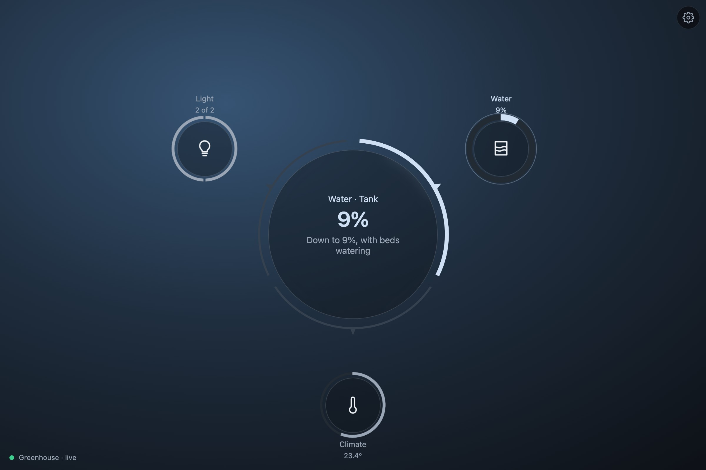
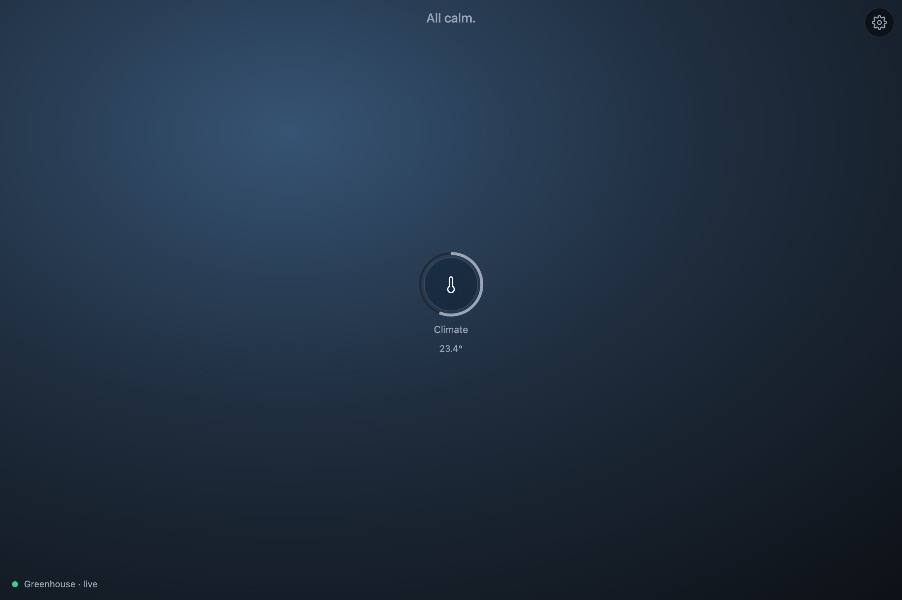
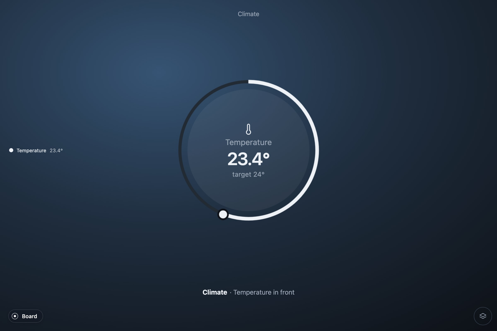
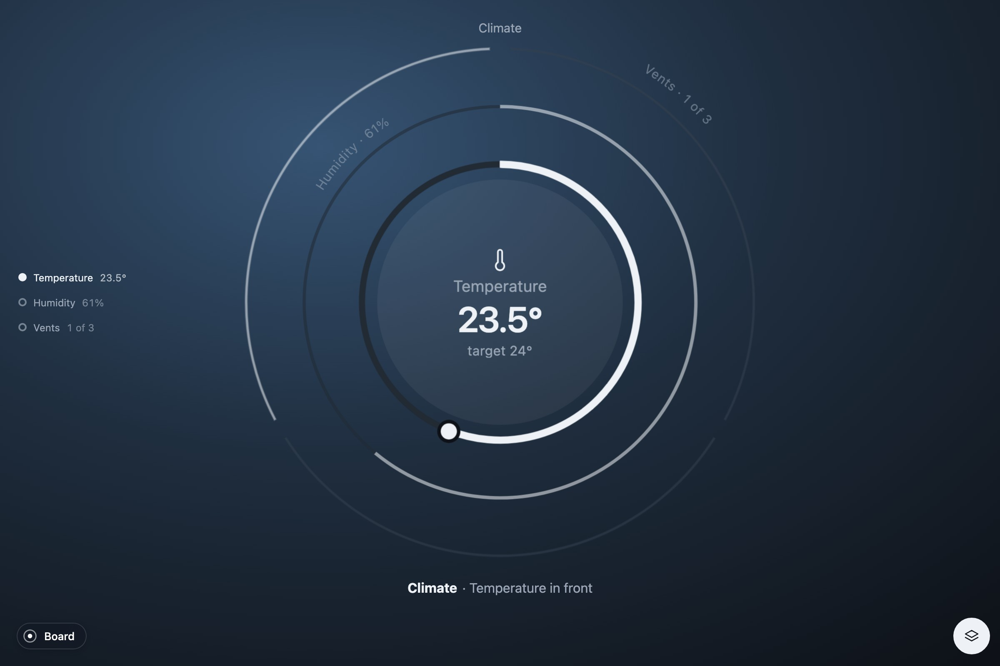
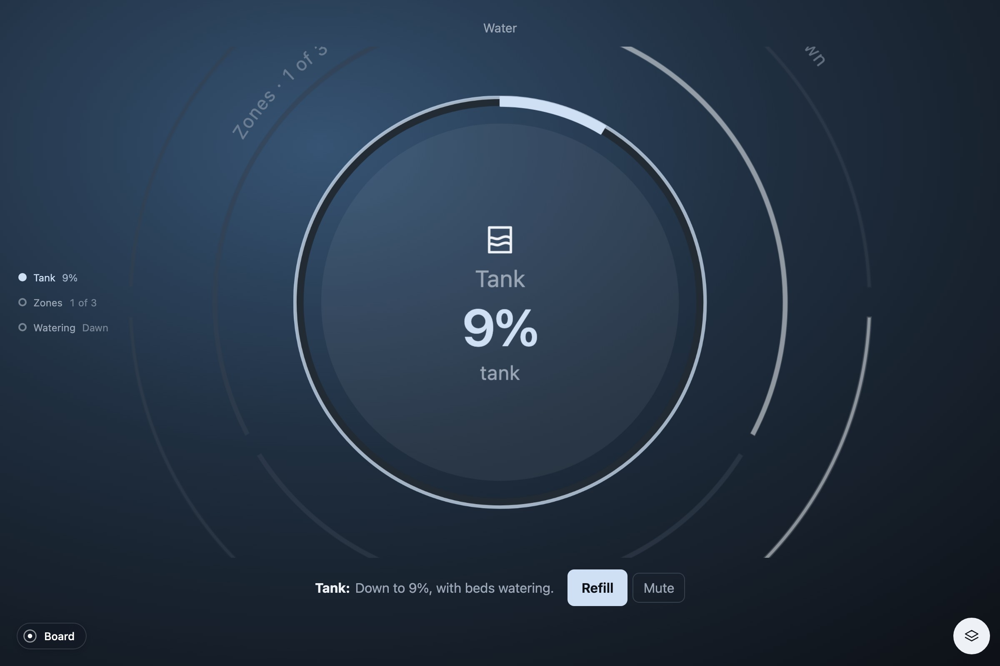
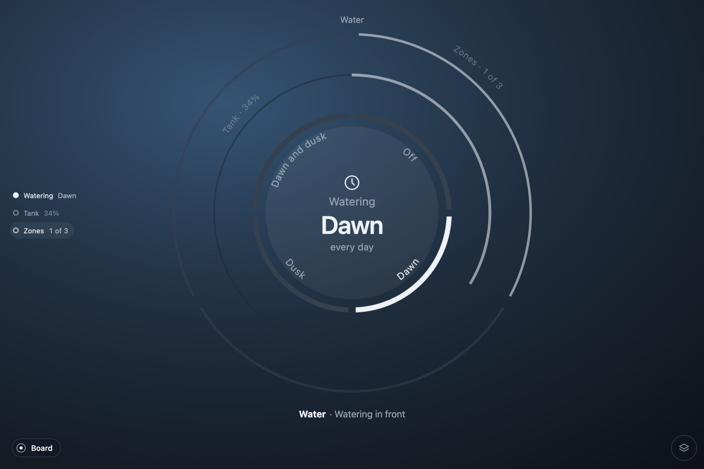
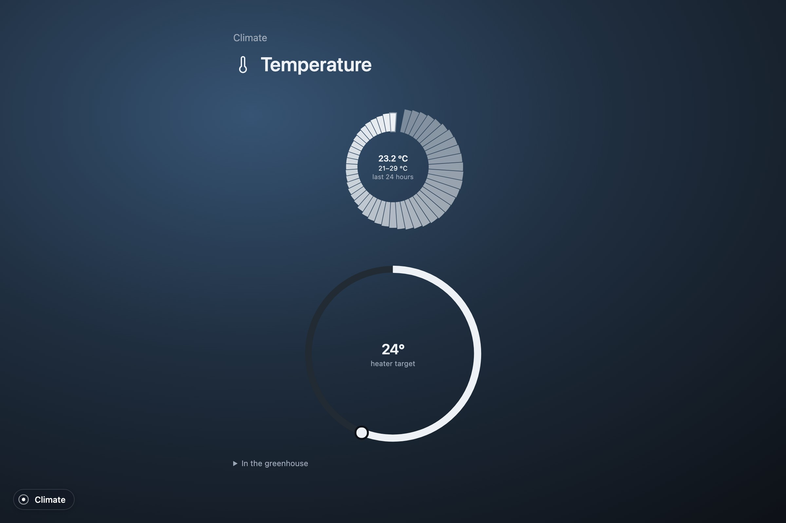
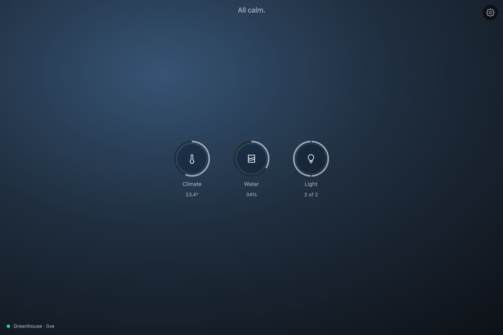
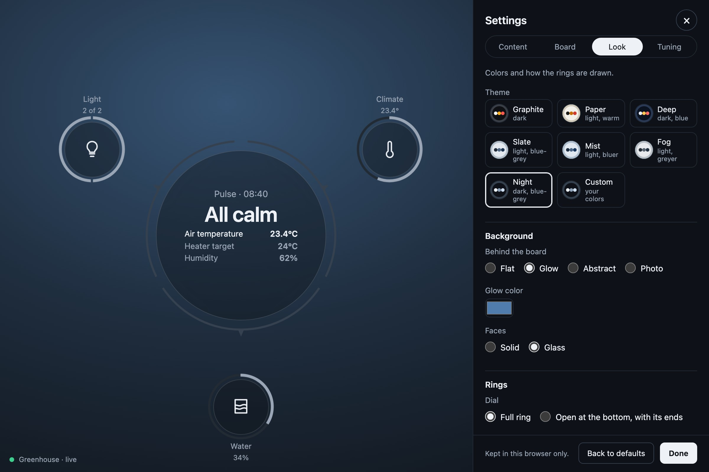

In use
A greenhouse from zero
Pulse over a source that does not exist: a greenhouse made up in a few lines and simulated in the browser, built into three objects one step at a time. Each step adds a file or a field and shows what the board does with it. Nothing here needs a server, a device or an account.

The finished code is in demo/greenhouse/ of the repository, four files: source.ts, the greenhouse itself; model.ts, its systems; host.ts, what the board reads; main.ts, the page. Every app on Pulse has these four, whatever its source. To see it run:
git clone https://github.com/zumerlab/pulse.git
cd pulse && npm ci
npm run dev # then http://127.0.0.1:5173/greenhouse/To build it in a project of your own instead, start at step 1. The code is the same; only the imports resolve from npm.
What we are building
A greenhouse has a few things worth watching and a few worth touching. Three systems come out of them:
- Climate. The air temperature, with the heater's target as a dial; the humidity; three vents to open and close.
- Water. A rain tank that empties as the beds are watered, and calls when it is nearly empty; three zones to start and stop; when to water, one of four choices.
- Light. Two lamps; the growth stage, one of three.
That is eight channels over fourteen things. The three kinds of ring Pulse has are all in there: a band with a dial, switches, a choice. So are an alert with an action, and a detail with a day of history.
1. The page
Pulse is @zumer/pulse, with Orbit and Zumly beside it, and any bundler that takes TypeScript; the repository uses Vite.
npm install @zumer/pulse @zumer/orbit zumly
npm install -D vite typescriptThe page is a shell that fills the viewport, and inside it the element the board mounts on. Nothing else.
<div class="shell">
<div id="canvas" class="zumly-canvas"></div>
</div>
<script type="module" src="./main.ts"></script>The script starts with the four stylesheets and the two runtimes, then the board and our own two files, which do not exist yet.
import 'zumly/style.css';
import '@zumer/orbit/style';
import '@zumer/orbit';
import '@zumer/pulse/style.css';
import { mountBoard } from '@zumer/pulse';
import { Greenhouse } from './source.ts';
import { hostOf } from './host.ts';2. A greenhouse that is not there
A source, to Pulse, is anything with things that have a state, a way to hear when one changes, and actions that change them. A real greenhouse would give you that from a serial port, an MQTT broker or an HTTP API. Ours is a class, source.ts. It knows nothing about Pulse except the shape of an Action: the ids of the things it touches, and whatever else the source needs to run it. Ours needs a verb and sometimes a value.
export type Thing = { id: string; name: string; state: number | string; unit: string; changed: number };
// What the greenhouse can do: set a target, flip a switch, pick one of a few
// words, refill the tank. `ids` is the core's: the things the action touches.
export type Act = Action & { do: 'set' | 'flip' | 'choose' | 'refill'; value?: number | string };
export const VENTS = ['vent.north', 'vent.south', 'vent.roof'];
export const ZONES = ['zone.beds', 'zone.pots', 'zone.trays'];
export const LAMPS = ['lamp.east', 'lamp.west'];The greenhouse holds its things in a map, keeps a status, and lets two kinds of listener in: one for changes, one for the status. start declares it live and sets a clock going.
export class Greenhouse {
readonly things = new Map<string, Thing>([
thing('air.temperature', 'Air temperature', 23.4, '°C'),
thing('air.target', 'Heater target', 24, '°C'),
thing('air.humidity', 'Humidity', 62, '%'),
thing('vent.north', 'North vent', 'closed'),
thing('vent.south', 'South vent', 'closed'),
thing('vent.roof', 'Roof vent', 'open'),
thing('tank.level', 'Rain tank', 34, '%'),
thing('zone.beds', 'Beds', 'on'),
thing('zone.pots', 'Pots', 'off'),
thing('zone.trays', 'Seed trays', 'off'),
thing('water.when', 'Watering', 'dawn'),
thing('lamp.east', 'East lamp', 'on'),
thing('lamp.west', 'West lamp', 'on'),
thing('light.stage', 'Growth stage', 'growing'),
]);
status: Status = 'connecting';
private timer = 0;
private changeListeners = new Set<(ids: string[]) => void>();
private statusListeners = new Set<() => void>();
onChange(fn: (ids: string[]) => void) { this.changeListeners.add(fn); return () => { this.changeListeners.delete(fn); }; }
onStatus(fn: () => void) { this.statusListeners.add(fn); return () => { this.statusListeners.delete(fn); }; }
start() {
this.status = 'live';
this.statusListeners.forEach((fn) => fn());
this.timer = window.setInterval(() => this.tick(), 2000);
}
stop() { clearInterval(this.timer); }Every change goes through one method, set, which tells the listeners. The clock calls it every two seconds with a little physics: the heater pulls the air toward its target, the sun warms it, an open vent lets some out, the zones that are on drain the tank.
number(id: string) { return Number(this.things.get(id)?.state ?? 0); }
is(id: string, state: string) { return this.things.get(id)?.state === state; }
// Sets a thing and tells whoever listens. The console can call it too:
// `greenhouse.set('tank.level', 9)` empties the tank.
set(id: string, state: number | string) {
const th = this.things.get(id);
if (!th || th.state === state) return;
th.state = state;
th.changed = Date.now();
this.changeListeners.forEach((fn) => fn([id]));
}
// Every two seconds the greenhouse breathes: the heater pulls the air toward
// its target, the sun warms it, each open vent lets some out; the humidity
// drifts, up with the watering and down with the vents; the zones that are
// on drain the tank.
private tick() {
const open = VENTS.filter((id) => this.is(id, 'open')).length;
const on = ZONES.filter((id) => this.is(id, 'on')).length;
const air = this.number('air.temperature'), target = this.number('air.target');
this.set('air.temperature', round(clamp(air + (target - air) * 0.08 + 0.25 - 0.2 * open + (Math.random() - 0.5) * 0.3, 5, 45)));
this.set('air.humidity', round(clamp(this.number('air.humidity') + 0.3 * on - 0.4 * open + (Math.random() - 0.5) * 1.5, 20, 99), 0));
if (on) this.set('tank.level', round(clamp(this.number('tank.level') - 0.4 * on, 0, 100)));
}Actions take a moment, as they do over a wire, and then change the things through the same set. That is what lets the board know an action went through: it hears the change.
// The controller takes a moment to answer, as a real one would; then the
// things change, and the board sees the action confirmed.
async act(a: Act) {
await new Promise((r) => setTimeout(r, 400));
for (const id of a.ids) {
const state = this.things.get(id)?.state;
if (a.do === 'set') this.set(id, Number(a.value));
else if (a.do === 'flip') this.set(id, state === 'on' ? 'off' : state === 'off' ? 'on' : state === 'open' ? 'closed' : 'open');
else if (a.do === 'choose') this.set(id, String(a.value));
else if (a.do === 'refill') this.set(id, 100);
}
}Three helpers round it out: thing builds an entry for the map, clamp and round keep the numbers tidy. That is the whole source. A real one would be longer where it talks to the hardware and identical where it talks to Pulse.
3. The first system, with one channel
A system is a title and a few channels. A channel is a key, a name, a glyph, and a function that reads the greenhouse into a Reading, or returns null when there is nothing to read. These are the shapes, in model.ts; the glyphs are SVG paths on a 24×24 grid.
export type Channel = { key: string; name: string; glyph: string; read: (g: Greenhouse) => Reading | null };
export type System = { id: string; title: string; channels: Channel[] };Start with one system and one channel: the air temperature, with the heater's target on the ring. A reading is one of three kinds; 'p' is a band. v is how far the band goes, from 0 to 1: here, where the target sits between the dial's ends. now is the measurement, in the dial's units, drawn as a mark on the band. The dial makes the band draggable: its range and step, its unit and label, the thing it moves, and set, which turns a new value into an action for the greenhouse. big and label are the face. ids names the things the reading depends on: the board beats them while an action is on its way, and logs them when they change.
// The heater's dial: what the band of the temperature ring spans.
const HEATER = { min: 10, max: 35 };
export const systems: System[] = [
{ id: 'climate', title: 'Climate', channels: [
{ key: 'air', name: 'Temperature', glyph: glyph.thermometer, read: (g) => {
const air = g.number('air.temperature'), target = g.number('air.target');
return {
kind: 'p', v: (target - HEATER.min) / (HEATER.max - HEATER.min), now: air,
dial: { ...HEATER, step: 0.5, unit: '°', label: 'heater target', value: target, id: 'air.target',
set: (value) => ({ ids: ['air.target'], do: 'set', value }) as Act },
big: `${num(air)}°`, label: `target ${num(target)}°`,
ids: ['air.temperature', 'air.target'],
};
} },
] },
];The board reads everything through one interface, PulseHost. Ours, in host.ts, binds each channel's read to the greenhouse and answers the rest from its things: the status, the changes, the actions, and words for a thing, its name and its state with its unit. The logged flag says which changes deserve a line in the board's log: a vent opening does, a temperature drifting every two seconds does not. This is the whole file.
export function hostOf(g: Greenhouse): PulseHost {
const bound: System[] = systems.map((sys) => ({
...sys, channels: sys.channels.map((ch) => ({ ...ch, read: () => ch.read(g) })),
}));
return {
get status() { return g.status; },
error: '',
hasData: true,
systems: bound,
// A word changing (a vent opened, a zone started) is worth a line in the
// log; a number moving every two seconds is not.
onChange: (fn) => g.onChange((ids) => fn(ids.map((id) => ({ id, logged: typeof g.things.get(id)?.state === 'string' })))),
onStatus: (fn) => g.onStatus(fn),
act: (a) => g.act(a as Act),
nameOf: (id) => g.things.get(id)?.name ?? id,
stateOf: (id) => {
const th = g.things.get(id);
return th ? `${typeof th.state === 'number' ? num(th.state) : th.state}${th.unit}` : '';
},
changedAt: (id) => g.things.get(id)?.changed,
unitOf: (id) => g.things.get(id)?.unit ?? '',
url: (path) => path,
history: async (id, hours) => g.history(id, hours),
};
}Then mount. In main.ts, after the imports: make the greenhouse, hand its host to the board, wait for the board, start the clock. settings is the key under which this browser keeps the viewer's choices.
const greenhouse = new Greenhouse();
const board = mountBoard(document.querySelector<HTMLElement>('#canvas')!, {
host: hostOf(greenhouse),
settings: 'pulse-greenhouse-settings',
});
await board.ready;
greenhouse.start();

Drag the knob, or focus the ring and use the arrows. On release the board calls dial.set, hands the action to the host, and marks air.target as sending: the ring beats. Four hundred milliseconds later the greenhouse changes the thing, the host reports it, and the ring settles on the new value. If act had thrown, the ring would keep a red outline and the strip would offer Retry with the message.
4. Three channels: layers
Two more channels make Climate a system worth the name. Humidity is a band without a dial: nothing to drag. The vents are switches, kind 's': one segment per vent, each with its own action. A small helper makes a segment out of a thing: its name, whether it is on, and the action that flips it.
// A switch's segment: tapping it flips the thing.
const flip = (g: Greenhouse, id: string, on: string): Seg => {
const th = g.things.get(id)!;
return { label: th.name, on: th.state === on, id, act: { ids: [id], do: 'flip' } as Act };
}; { key: 'humidity', name: 'Humidity', glyph: glyph.drop, read: (g) => {
const h = g.number('air.humidity');
return { kind: 'p', v: h / 100, big: `${num(h, 0)}%`, label: 'relative humidity', ids: ['air.humidity'], history: 'air.humidity' };
} },
{ key: 'vents', name: 'Vents', glyph: glyph.wind, read: (g) => {
const open = VENTS.filter((id) => g.is(id, 'open'));
return {
kind: 's', segs: VENTS.map((id) => flip(g, id, 'open')),
big: `${open.length} of ${VENTS.length}`, label: open.length ? `${names(g, open)} open` : 'all closed',
ids: VENTS,
};
} },names is one line over the core's listOf: "north vent and roof vent". The history field names the thing whose day the detail shows; step 7 comes back to it.

The front layer is the channel that calls the most; with nothing calling, the one the viewer last picked; otherwise the first. Tap a ring behind, or its name in the list, to bring it forward. Three layers are drawn on a desktop and two on a phone; the rest are named under the object and come forward the same way. Two to four channels that compete for attention make a good system. More than that is usually two systems.
5. An alert, and what to do about it
The second system is Water. Its tank is a band like the humidity, with one thing more: when the level is under 15 %, the reading carries an alert. An alert has a level, 1 for minor and 2 for critical; its own big and label for the face while it calls; why, one sentence; a verb for the button; and acts, the actions that resolve it. With no actions, the verb only marks the alert as seen. The key says what the alert is about: the words carry the level, which drifts, and without a key each new number would be a new alert.
{ key: 'tank', name: 'Tank', glyph: glyph.tank, read: (g) => {
const level = g.number('tank.level'), on = ZONES.filter((id) => g.is(id, 'on'));
return {
kind: 'p', v: level / 100, big: `${num(level, 0)}%`, label: 'rain tank', ids: ['tank.level'],
history: 'tank.level',
alert: level < 15 ? {
level: 2, key: 'tank', big: `${num(level, 0)}%`, label: 'tank',
why: `Down to ${num(level, 0)}%${on.length ? `, with ${names(g, on)} watering` : ''}`,
verb: 'Refill', acts: [{ ids: ['tank.level'], do: 'refill' } as Act],
} : undefined,
};
} },
Press Refill: the board sends the action, the tank beats, the greenhouse fills it, the alert goes, and the layer settles back where it was. On the board the same alert reaches the tile, the orbit's center and the list, in that tone, with the count in the headline. The beds are watering, so the tank empties on its own in about a minute and a half; to hurry it, the page leaves the greenhouse on the console:
greenhouse.set('tank.level', 9)
greenhouse.set('air.temperature', 33)The second line trips the other alert, which is in the temperature channel from the finished file: over 30° the air is too warm, level 1, and the verb opens every vent that is closed, one action per vent. An alert's actions can be several; the board sends them in turn and waits for all of them.
alert: air > 30 ? {
level: 1, key: 'warm', big: `${num(air)}°`, label: 'too warm', why: `The air is at ${num(air)}°, over 30°`,
verb: closed.length ? 'Open the vents' : 'Noted',
acts: closed.map((id) => ({ ids: [id], do: 'flip' }) as Act),
} : undefined,6. Switches and a choice
Water has two channels more. The zones are switches, like the vents. When to water is a choice, kind 'c': a few options along the ring, one of them on. A segment of a choice carries the value it stands for; tapping it sends a choose.
// A choice's segment: tapping it picks that value for the thing.
const choose = (g: Greenhouse, id: string, value: string, label: string): Seg =>
({ label, on: g.is(id, value), id, act: { ids: [id], do: 'choose', value } as Act });
// The chosen option of a choice, as its label.
const chosen = (g: Greenhouse, id: string, options: [string, string][]) =>
(options.find(([v]) => g.is(id, v)) ?? options[0])[1];const WATERING: [string, string][] = [['off', 'Off'], ['dawn', 'Dawn'], ['dusk', 'Dusk'], ['both', 'Dawn and dusk']]; { key: 'zones', name: 'Zones', glyph: glyph.sprinkler, read: (g) => {
const on = ZONES.filter((id) => g.is(id, 'on'));
return {
kind: 's', segs: ZONES.map((id) => flip(g, id, 'on')),
big: `${on.length} of ${ZONES.length}`, label: on.length ? `${names(g, on)} watering` : 'nothing watering',
ids: ZONES,
};
} },
{ key: 'when', name: 'Watering', glyph: glyph.clock, read: (g) => ({
kind: 'c', segs: WATERING.map(([v, label]) => choose(g, 'water.when', v, label)),
big: chosen(g, 'water.when', WATERING), label: 'every day', ids: ['water.when'],
}) },
Light, the third system, is the same two shapes again, in twelve lines: the lamps as switches, the growth stage as a choice.
{ id: 'light', title: 'Light', channels: [
{ key: 'lamps', name: 'Lamps', glyph: glyph.lamp, read: (g) => {
const on = LAMPS.filter((id) => g.is(id, 'on'));
return {
kind: 's', segs: LAMPS.map((id) => flip(g, id, 'on')),
big: `${on.length} of ${LAMPS.length}`, label: on.length ? `${names(g, on)} on` : 'both off',
ids: LAMPS,
};
} },
{ key: 'stage', name: 'Stage', glyph: glyph.leaf, read: (g) => ({
kind: 'c', segs: STAGES.map(([v, label]) => choose(g, 'light.stage', v, label)),
big: chosen(g, 'light.stage', STAGES), label: 'growth stage', ids: ['light.stage'],
}) },
] },A segment or a dial resolved on the face has no detail: the ring is where it is operated. Tap the disc of the lamps and nothing opens, because there is nothing more to show.
7. A day, in the detail
Some readings have more to show than a face holds. A number worth a day gets history: the id of the thing. The host answers history(id, hours) with one value per hour, the oldest first, and the detail draws them as a ring around the value of now. Our greenhouse remembers nothing, so it makes a plausible day up.
// A day of a numeric thing, one value per hour, the oldest first. The
// greenhouse remembers nothing, so it makes a plausible day up: the air
// warmest mid-afternoon and coolest before dawn, the humidity the other way
// round, the tank draining toward where it is now.
history(id: string, hours: number): (number | null)[] {
const now = this.number(id), hour = new Date().getHours();
const curve = (h: number) => Math.sin(((h - 9) / 24) * 2 * Math.PI);
const swing = id === 'air.temperature' ? 4 : id === 'air.humidity' ? -12 : 0;
return Array.from({ length: hours }, (_, i) => {
const ago = hours - 1 - i, h = (hour - ago + 48) % 24;
const drift = id === 'tank.level' ? 0.6 * ago : swing * (curve(h) - curve(hour));
return round(now + drift + (Math.random() - 0.5) * 0.6);
});
}The host already passes it on (history: async (id, hours) => g.history(id, hours)) and the temperature, the humidity and the tank already name their thing. A real source would query its database here; the core's hourly turns rows of (value, time) into the hours.

A detail opens only when it adds something: a day, a picture, a long list, a color, several things to name. The other things a reading can ask for are in In your project: a picture or a live stream, a color wheel, a month of a meter, a radar, a globe, a map.
8. The board
Three systems make a board. It has four views and the viewer picks one from the gear: a grid of tiles, the orbit with the pulse in the center, the systems as layers of one object, or a list by urgency. What calls comes first in all of them; what is calm folds away while something calls.


None of this is in our code. The board, the views, the gear, the detail, the log of changes, the phone layout: they come with mountBoard. What our code decides is the frame the viewer chooses within, and that is the last step.
9. The frame, and your own words
The options of mountBoard are what the shell fixes: which systems the gear may offer, the view and the system it opens on, how it looks until the viewer changes it, and the words it uses for your things. The finished main.ts sets a look, a status line and two strings.
const greenhouse = new Greenhouse();
const board = mountBoard(document.querySelector<HTMLElement>('#canvas')!, {
host: hostOf(greenhouse),
settings: 'pulse-greenhouse-settings',
look: { theme: 'night', ground: 'glow' },
status: () => `<span class="conn conn-${greenhouse.status}"><span class="conn-dot"></span>Greenhouse · ${greenhouse.status}</span>`,
strings: { things: 'In the greenhouse', connecting: 'Reading the greenhouse…' },
});
await board.ready;
greenhouse.start();lookis the default appearance: here the Night theme, one blue-grey family that tells urgency by tone, over a glow. The viewer can pick another in the gear;lookis only where it starts. The seven themes and the grounds are in In your project.statusis the connection line at the bottom of the board, as HTML. Theconnclasses are the core's; the words are yours.stringsreplaces the board's words where your source has its own: what it calls the things behind a reading, what it says while connecting. The whole dictionary is the core'st; another language is another dictionary.
The last line of the file puts greenhouse and board on window, for the console. That is the tutorial's convenience, not a requirement.
Where to go from here
- A real source. Keep the surface of
Greenhouseand fill it from the wire: things from a first read,setfrom each message,actas a request,historyfrom a database.model.tsandhost.tsdo not change. The apps on Pulse do this over a collector, public feeds, Signal K, MQTT, Prometheus, MAVLink; Your own source names them. - Groups. With benches or beds as groups,
groups()lets the gear filter by them andbyGroup()gives the board a second axis, one object per bed with the systems' channels read within it. A home does this with its rooms. - One object per thing.
objectOf(id)makes a thing a segment names into an object of its own, zoomed into from the ring: a bed, a plant, an aircraft. - The contract.
PulseHost,System,Channel,ReadingandActionare insrc/model.tsof the repository, commented; In your project walks the options ofmountBoard, the themes, the strings and a shadow root; Elements shows each primitive alone with what it takes.